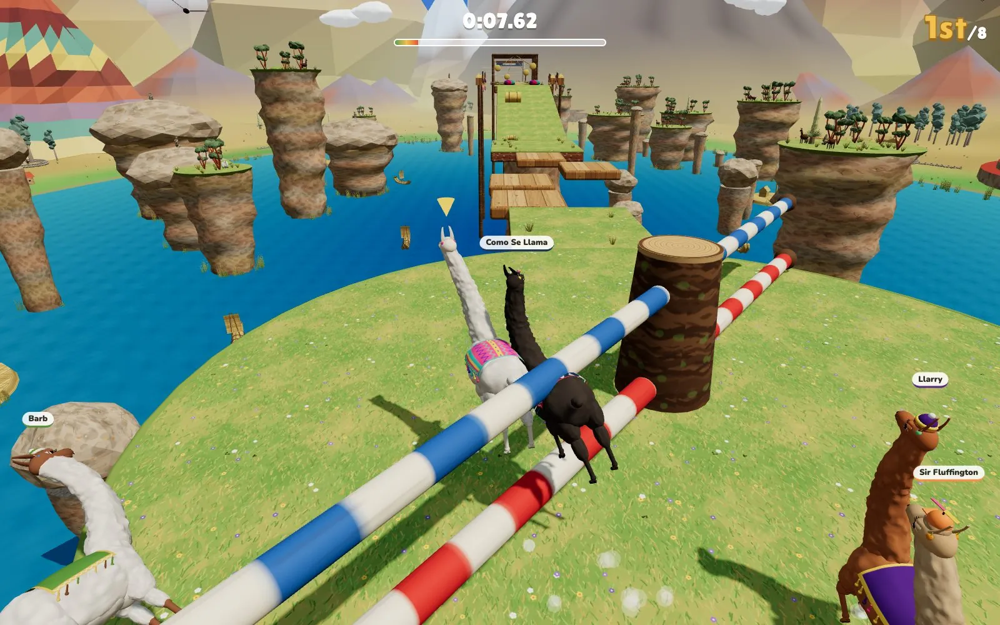

Steer a very top-heavy llama through spinning sweepers, swinging hammers and tipping see-saws, racing seven bot llamas to the finish.
Things with a score, a clock or someone to beat.
Simulations and toys to watch, poke at and get lost in.